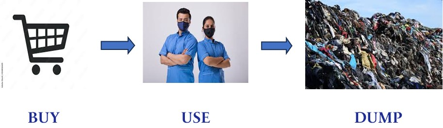
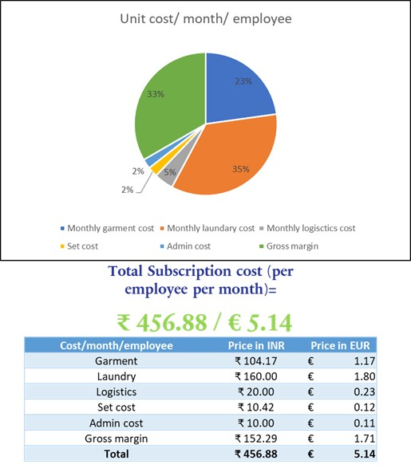
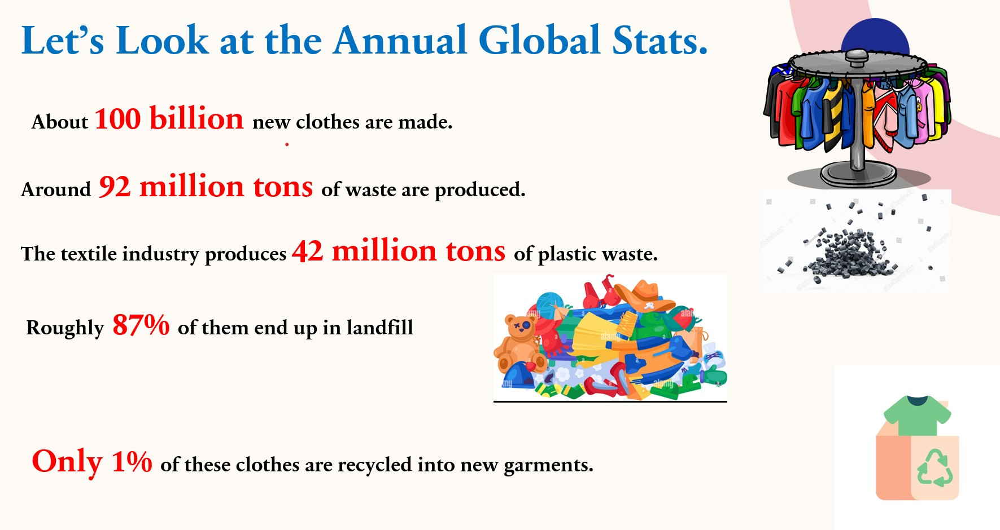

Re-Union — Circular Uniform Startup
A Circular Economy Startup: Uniform Rental, Repair & Recycling for Corporate India
| Event | IGCS–motan Workshop: Reduce | Re-Use | Recycle | Recover |
| Organisation | Indo-German Centre for Sustainability (IGCS) & motan GmbH |
| Date | 2024 |
| Role | Startup Founder & Presenter — Kabir Kundapur Sheik |
| Award | 1st Place — University Startup Competition |
| Target Market | India — large corporates (5,000+ employees) |
| Business Model | B2B Subscription — Uniform Rental, Repair & Recycle |
Overview
Re-Union is a circular economy startup concept that won 1st place at the IGCS–motan university competition. The core idea replaces the corporate uniform's linear Buy–Use–Dump model with a fully circular subscription service: uniforms are rented to companies, collected weekly for washing and repair, and at end-of-life, re-spun into new garments — closing the textile loop entirely.
The global textile industry generates 92 million tonnes of waste annually, with 87% going to landfill and only 1% recycled into new garments. Corporate uniforms are an ideal starting point for circular intervention — they are mono-material (100% PET polyester), mono-colour, and produced at high volume. Crucially, recycling polyester from this homogeneous feedstock is actually cheaper than producing virgin polyester — aligning environmental and economic incentives in the same direction.

The Business Model
The six-step circular loop: Re-Union rents 100% PET uniforms → employees use them → weekly collection for industrial laundering and repair → return to client → end-of-life collection → PET fibres re-spun into new uniforms.
Why polyester uniforms?
- Mono-material: 100% PET — no blended fibres, no sorting complexity
- Mono-colour: no bleaching or colour separation needed
- PET recyclability: technically mature, economically viable, and cheaper to recycle than produce virgin
Why India? India generates 9.4 million metric tonnes of plastic waste annually, almost zero post-consumer textile recycling infrastructure, and thousands of manufacturers with 5,000+ uniformed employees — a massive untapped market with growing ESG pressure.
| Cost Item | INR / month | EUR / month | % of Total |
|---|---|---|---|
| Garment cost | ₹ 104.17 | € 1.17 | 23% |
| Laundry cost | ₹ 160.00 | € 1.80 | 35% |
| Logistics cost | ₹ 20.00 | € 0.23 | 4% |
| Set cost | ₹ 10.42 | € 0.12 | 2% |
| Admin cost | ₹ 10.00 | € 0.11 | 2% |
| Gross margin | ₹ 152.29 | € 1.71 | 33% |
| TOTAL | ₹ 456.88 | € 5.14 | 100% |

Key Findings
- At €5.14/employee/month, the model converts large capital expenditure into a predictable operating cost.
- Gross margin of 33% demonstrates commercial viability at this price point.
- Laundry (35%) is the largest cost driver — optimising laundry logistics is the primary margin lever.
- The model directly supports clients' GRI, CSRD/ESRS, and UN SDG reporting with measurable circularity metrics.

Conclusion
Re-Union demonstrates that circular economy principles can generate a commercially viable business while solving a genuine environmental problem. The alignment of economic incentive (cheaper recycled feedstock) with environmental outcome (landfill diversion) makes this a genuine circular economy case. The 1st place finish at the university competition validated both the commercial logic and the sustainability credentials.
Future pathways include RFID tracking, expansion to Germany, and strategic partnerships with industrial laundry networks.